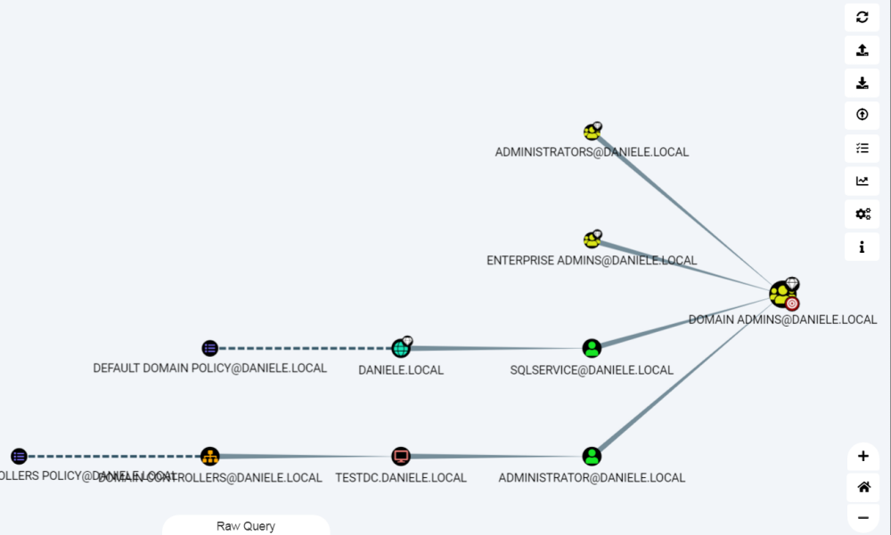

Find Shortest Path to Domain Admins
Query:"Find Shortest Path to Domain Admins"
1. Select a Domain Admin Group
2. Now a graph is generated, if it is a little bit confusing we can change the layout by clicking on “Change Layout Type”
